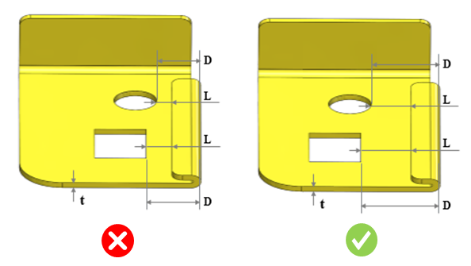
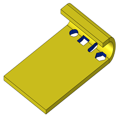

ヘムとカットアウト間の最小距離は、推奨値に従う必要があります。
対象領域における板材の変形や割れを防止するため、ヘムとカットアウトの間には一定量（最小）の距離を確保する必要があります。
ヘムとカットアウト間の最小距離は、板厚の 3.5 倍以上である必要があります。
DFMPro は、ヘム形状とカットアウト間の最小距離を識別し、その距離と板厚との比率を算出します。この値は、設定された値に対して検証されます。
ユーザーは、デフォルトで設定されている値を編集することができます。
このルールでは、スロットや穴などのカットアウトが対象として考慮されます。
ルール UI では、Map Material から材料の一覧が読み込まれ、ユーザーは材料およびその値を構成することができます。
材料とその値を構成した後、ユーザーは Ctrl+M コマンドを使用して、ルール UI 上でマテリアルグループおよびグレードとともに構成済み材料の一覧をフィルタおよび表示することができます。同じキー（Ctrl+M）は、フィルタの解除にも使用されます。

ここでは、
t = 板厚
D = ヘムとカットアウト間の最小距離
L = ヘムの先端エッジからカットアウトまでの距離
注記:
対応しているヘムのタイプ: オープン、クローズ、ティアドロップ、およびロールドヘム。
面取り付きのカットアウトもサポートされています。
このルールは、下図に示すように、ヘムの曲げエッジ上に存在するカットアウトは解析しません。ただし、カットアウトと曲げ間距離のルールでは、この問題を識別し、距離 0 として報告します。
